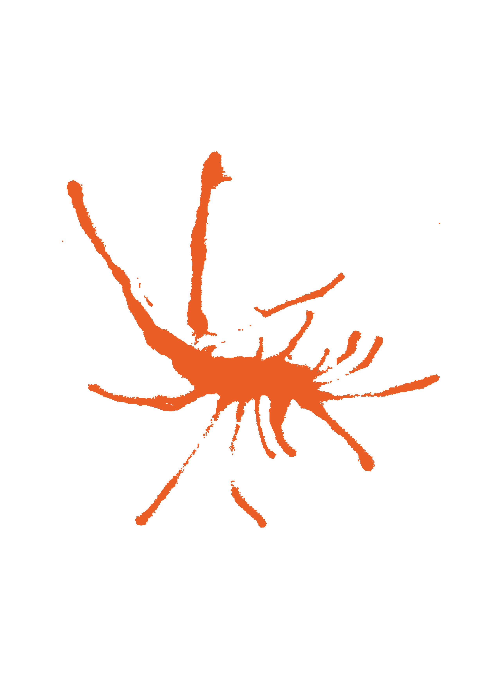

62 éoliennes en mer
Pour questionner notre rapport à la nature, les images qui me sont venus à l’ésprit sont les perturbations sous-marines causées par l’implantation de 62 éoliennes en mer et les effets des champs électromagnétiques sur la flore. En contraste des algues qui dansent habituellement librement et avec grâce, je les ai imaginé figées et biscornnues, témoignage de leur électrocution du fait des rayonnements électriques.
